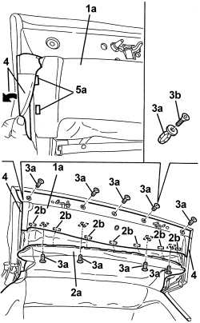

7030H20 HOOD FRONT PANEL - R.R.
- Path
- Procedures > 70 FITTINGS > 7030 SUN ROOF/GLASS PANEL > 7030H AUTOMATICALLY OPERATED HOOD > 7030H20 HOOD FRONT PANEL - R.R.
- Kind
- repair procedure (removal / refitting; the operation number is the code)
- Applies to
- engines: 2.2 JTS, 3.2 JTS; all production periods
- Interactive page
- https://sloeber94.github.io/elrnDB-aBrrSpdr/en/#/946003666
Applies to: engines: 2.2 JTS, 3.2 JTS; all production periods
 Removing
Removing
 Refitting
Refitting- Prepare the hood for the operation.
Op. 0010T79 HOOD HYDRAULIC SYSTEM - DISCHARGE AND RESTORE PRESSURE
1. Electrically open the hood until it is possible to work on the front panel (1a).
2. Release the front part (2a) of the hood interior lining from the internal retainers (2b).
3. Remove the inner lining expansion retainers (3a), after unscrewing their expansion bolts.
4. Move the side seal edges.
5. Remove the front panel (1a) releasing the side retainers (5a).

Applies to: engines: 2.2 JTS, 3.2 JTS; all production periods
Refitting
Removing- Check that the front panel is not damaged.
- Move the side seal edges then position the front panel and engage the side retainers.
- Position the side seal edges.
- Apply the expansion retainers to the front panel and then tighten the expansion bolts.
- Secure the front part of the hood interior lining to the internal retainers.
- If discharged, restore the hood hydraulic system pressure.
Op. 7030H03 HOOD MANUAL OPENING FOLLOWING DEACTIVATION OF HYDRAULIC SYSTEM - CARRY OUT PROCEDURE
- Check that the hood is working correctly.
Topics linked from this page (2)
- 0010T79 HOOD HYDRAULIC SYSTEM - DISCHARGE AND RESTORE PRESSURE
- 7030H03 HOOD MANUAL OPENING FOLLOWING DEACTIVATION OF HYDRAULIC SYSTEM - CARRY OUT PROCEDURE